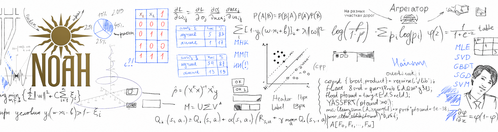
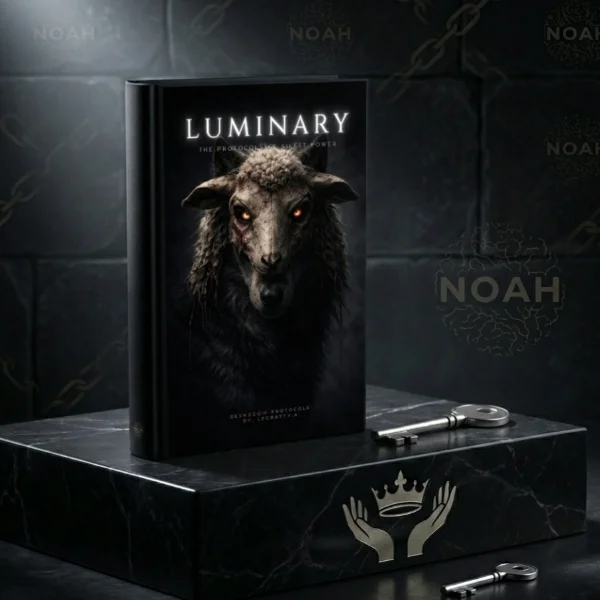
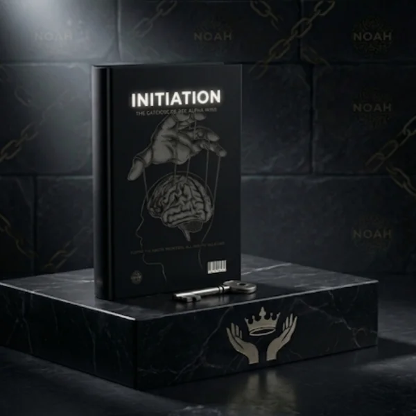

"Hội Những Người Được Chọn" không phải là những tổ chức chính thống, và cũng không được thành lập rộng rãi, cũng không dễ dàng để tìm thấy. Tuy nhiên, cụm từ chính xác này thường được dùng để chỉ các mạng lưới huấn luyện cuộc sống hoặc chăm sóc sức khỏe chuyên biệt - chẳng hạn như: "Dự Án Alpha Human" - Tập trung vào khả năng lãnh đạo cá nhân, tối ưu hóa sức khỏe và khả năng phục hồi cảm xúc.
Khái niệm này thường liên quan đến việc tự hoàn thiện bản thân và tâm lý học. Mặc dù được phổ biến như những hệ thống phân cấp quyền lực lỗi thời, tuy nhiên, triết lý "Alpha" hiện đại tập trung vào sự tự tin cao độ, khả năng tự chủ và đạt được mục tiêu rõ ràng.
Ngoài ra, thuật ngữ này còn có sự trùng lặp với một số văn hóa đại chúng hoặc tiểu thuyết:
* Star Trek: Điểm giao thoa của quyền lực chính trị trong thiên hà, thường được gọi là "Khu Vực Alpha".
* Văn học khoa học viễn tưởng: Những tựa sách như Nexus Alpha , kết hợp các yếu tố khoa học viễn tưởng với những mối quan hệ giữa các cá nhân ưu tú (Người Được Chọn).
* Loạt tiểu thuyết trinh thám của Jeffery Deaver (Nhà báo, luật sư thường xuyên hoạt động trong lĩnh vực tâm lý chiến).
"Vùng Tối Shadow" đề cập đến các vấn đề về sự "Thao Túng Tâm Lý" đen tối nổi tiếng thường được áp dụng trong đời sống hàng ngày, nghiên cứu về cách mà một thao túng ngầm, tống tiền cảm xúc và kiểm soát tâm trí có thể bắt đầu. Tìm hiểu lĩnh vực này một cách an toàn, hướng dẫn đọc các phân tích chuyên sâu trên các nền tảng "Phân Tích Tâm Lý Học".
Hiểu rõ những khái niệm này giúp bạn nhận biết các thủ đoạn thao túng và bảo vệ sức khỏe tinh thần của mình. Việc nghiên cứu các bí mật đen tối thường xoay quanh các khái niệm cốt lõi sau:
"Bộ ba đen tối" của tính cách - Tâm lý học đen tối phân tích sâu sắc những cá nhân thể hiện ba đặc điểm tính cách độc ác, chồng chéo nhau:
* Chủ nghĩa Machiavellian: Đặc trưng bởi sự dối trá, thế giới quan hoài nghi và sự thiếu đồng cảm một cách có chủ đích.
* Chứng ái kỷ: Đặc trưng bởi tính tự cao tự đại, nhu cầu được ngưỡng mộ liên tục và cảm giác tự cho mình quyền được hưởng mọi thứ một cách sâu sắc.
* Rối loạn nhân cách chống đối xã hội: Được định nghĩa bởi sự thiếu hụt nghiêm trọng về lòng cảm thông hoặc hối hận, tính bốc đồng và hành vi chống đối xã hội.

Thuật ngữ "Người Khai Sáng" (Luminary) ban đầu dùng để chỉ những người tham gia vào các hoạt động chính trị cấp tiến hoặc cách mạng trong "Thời Đại Ánh Sáng" của thế kỷ 18 đến 19, và từ đó cũng bao hàm một nhóm rộng lớn các ý tưởng và cương lĩnh chính trị được các phong trào đó ủng hộ, hoặc trở nên chiếm ưu thế trong giai đoạn đó. Ban đầu, "Người Khai Sáng" chỉ dùng để chỉ những người tự xưng là vua triết gia hay người lãnh đạo tinh thần của các quốc gia cách mạng mới, trước khi dần được mở rộng để bao gồm những người ủng hộ họ, và sau đó là những người hoặc nhóm người đề xướng các ý tưởng cấp tiến nói chung.

KHỞI ĐẦU (Initiation) là bản kế hoạch nền tảng để tái cấu trúc tâm lý của bạn nhằm tiếp cận trạng thái sóng não Alpha (8-13 Hz) và thiết lập một tư duy ưu tú. Điều này đòi hỏi sự cam kết hàng ngày đối với việc tự rèn luyện tích cực, kiểm soát cảm xúc và tập trung tính kỷ luật cũng như sự bền bỉ trong tâm trí.Igor Pablo ✧◦♚◦✧ Snow Man